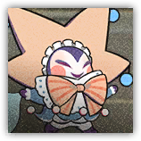
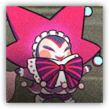

布景小丑 Scenesetting Clown
近战 远程 物理；普通 构装・
|
 |
为不醒童话进行布景的奇异布偶。它们讨厌休息的地方有光亮，所以乘上自己吹出的气球，努力要把窗外的月光遮住。 |
布景小丑丨Scenesetting Clown
中型构装（梦境造物），中立
| AC 13 | 先攻 +3（13） |
| HP 52（8d8+16） | |
| 速度 30 尺 | |
| 调整 | 豁免 | 调整 | 豁免 | 调整 | 豁免 | |||||||||
|---|---|---|---|---|---|---|---|---|---|---|---|---|---|---|
| 力量 | 9 | -1 | -1 | 敏捷 | 17 | +3 | +3 | 体质 | 14 | +2 | +2 | |||
| 智力 | 8 | -1 | -1 | 感知 | 12 | +1 | +3 | 魅力 | 16 | +3 | +3 |
| 技能 察觉+3 |
| 抗性 心灵 |
| 免疫 中毒，力竭 |
| 感官 黑暗视觉60尺；被动察觉13 |
| 语言 懂通用语但不能说 |
| CR 2（XP 450；PB +2） |
特质 Traits
轻盈躯体 Light Body。布景大师受到的坠落伤害减半。当布景大师坠落时，对周围的生物产生冲击――敏捷豁免检定：DC13，每个布景大师坠落时位于其5尺内的生物。失败：14（4d6）钝击伤害。成功：半伤。
动作 Actions
多重攻击 Multiattack。布景小丑发动两次布景道具攻击。
布景道具 Set Props。近战或远程攻击检定：+5，触及5尺或射程20/60尺。命中：10（2d6+3）钝击伤害。
吹气球 Blowing Balloon。布景大师为自己添加20点临时生命值，前提是其原本没有。以此获得的临时生命值存在时，布景大师具有30尺飞行速度。
布景大师 Scenesetting Master
近战 远程 物理；普通 构装
|
 |
为不醒童话进行布景的诡异布偶。它们想要通过气球调整光线，就没人能教教它们调整一下窗帘吗？ |
布景大师丨Scenesetting Master
中型构装（梦境造物），中立
| AC 13 | 先攻 +6（16） |
| HP 78（12d8+24） | |
| 速度 30 尺 | |
| 调整 | 豁免 | 调整 | 豁免 | 调整 | 豁免 | |||||||||
|---|---|---|---|---|---|---|---|---|---|---|---|---|---|---|
| 力量 | 9 | -1 | -1 | 敏捷 | 18 | +4 | +4 | 体质 | 14 | +2 | +4 | |||
| 智力 | 8 | -1 | -1 | 感知 | 12 | +1 | +3 | 魅力 | 16 | +3 | +3 |
| 技能 察觉+2，表演+4 |
| 抗性 心灵 |
| 免疫 中毒，力竭 |
| 感官 黑暗视觉60尺；被动察觉13 |
| 语言 懂通用语但不能说 |
| CR 3（XP 700；PB +2） |
特质 Traits
轻盈躯体 Light Body。布景大师受到的坠落伤害减半。当布景大师坠落时，对周围的生物产生冲击――敏捷豁免检定：DC14，每个布景大师坠落时位于其5尺内的生物。失败：17（5d6）钝击伤害。成功：半伤。
动作 Actions
多重攻击 Multiattack。布景大师发动两次布景道具攻击。
布景道具 Set Props。近战或远程攻击检定：+6，触及5尺或射程20/60尺。命中：14（3d6+4）钝击伤害。
吹气球 Blowing Balloon。布景大师为自己添加30点临时生命值，前提是其原本没有。以此获得的临时生命值存在时，布景大师具有30尺飞行速度。